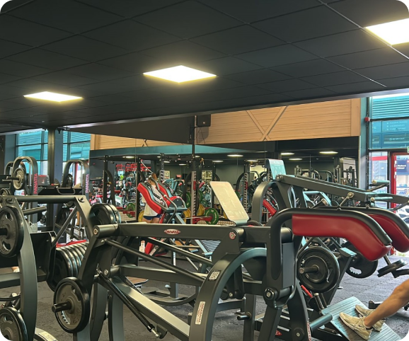
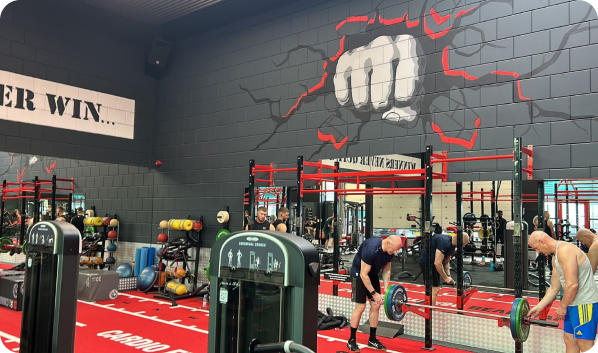

<header class="titleandicons">
    <p class="titlepage">Basic-Fit Heemskerk</p>
</header>

<section class="uppercontent">
    <aside class="textuppercontent">
        <span class="thickerfont">Split</span> 
                
                - Push/Pull/Legs split recommended.
                - Categories: Push (Chest, Triceps, Shoulder), Pull (Back, Biceps, Forearms), Legs (Quadriceps,
                Hamstrings, Calves).
                
                <span class="thickerfont">Sets</span>
               
                - Perform 1-2 sets per exercise.
                - Target each muscle group for 2-8 sets per workout.
                - Train every 5+- days for muscle stimulation and recovery.
        </p>
    </aside>

    
</section>

<section class="lowercontent">
    
    <aside class="textlowercontent">
        <p><span class="thickerfont">Repetition range</span>
                
            - Stay in the 5-9 repetition range.
            - Technique is crucial; practice with higher rep ranges (5-30) if needed.
            - Over 10 reps builds more fatigue.
            
            <span class="thickerfont">Important notes for building muscle</span>
            
            - Train close to/failure on every set.
            - Take 3-5+ minutes of rest after each set for full recovery.
            - Proper rest crucial for maximizing muscle growth and performance.
            - Warm up before each exercise to minimize injury chances.
            -Use progressive overload: Increase weight or aim for more
            reps than the last workout if weight increase
            isn't possible.</p>
    </aside>
</section>
